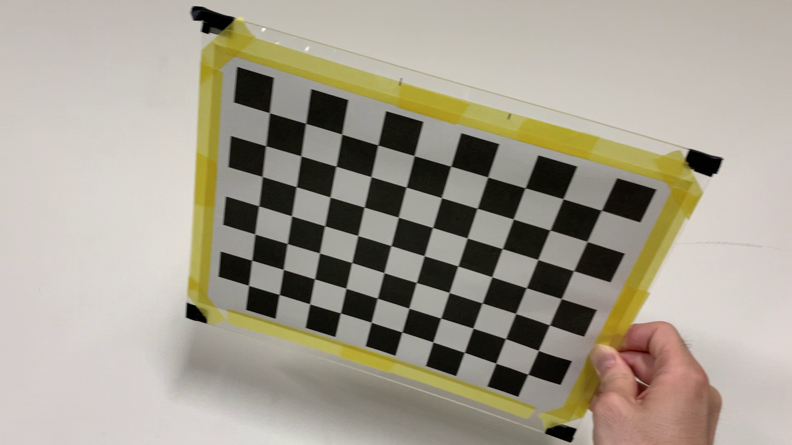
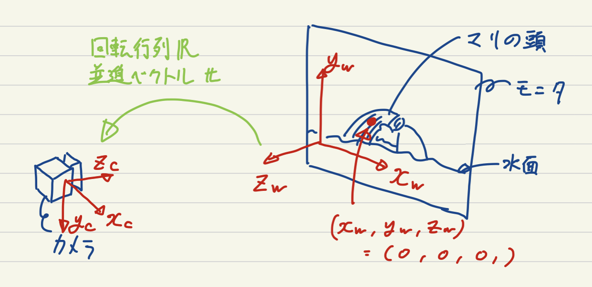
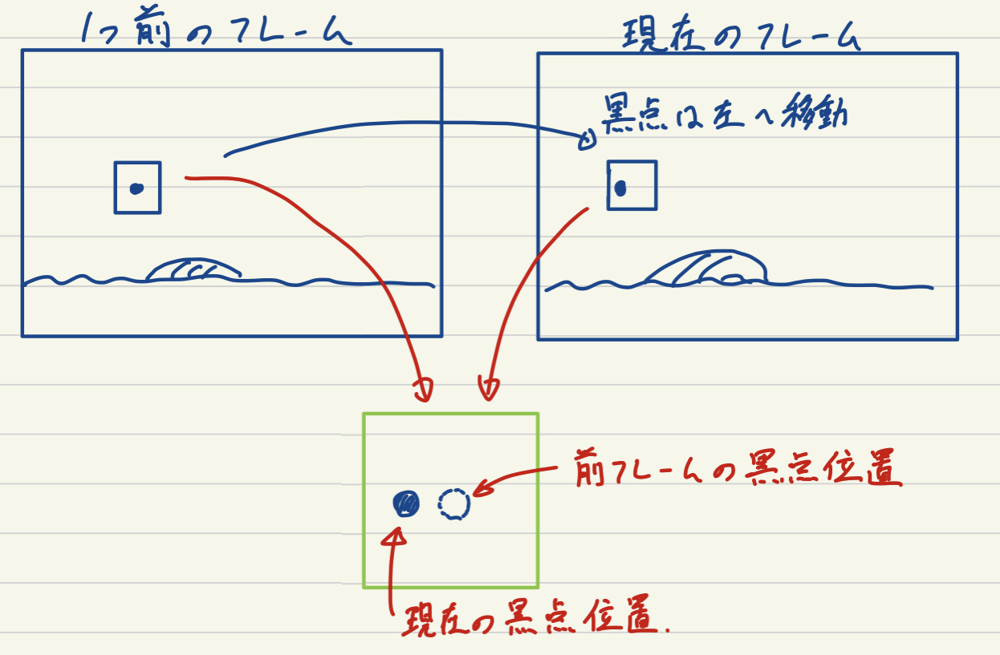
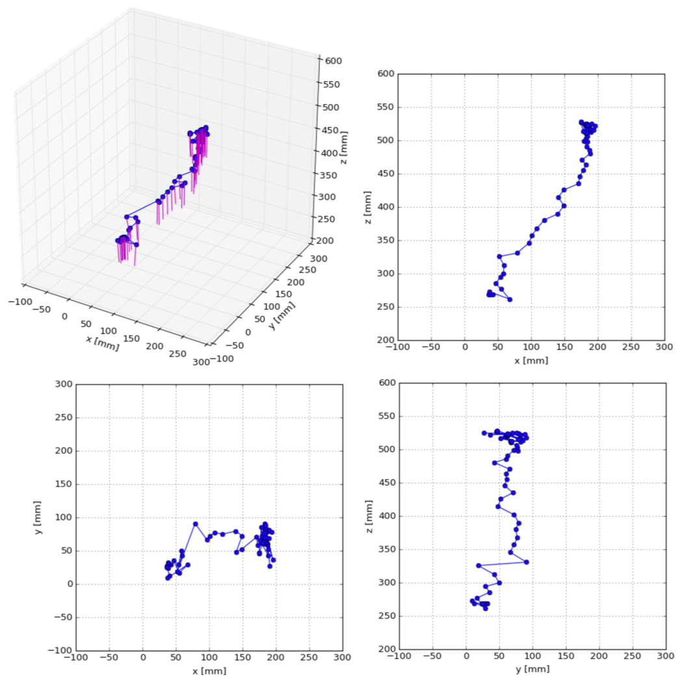
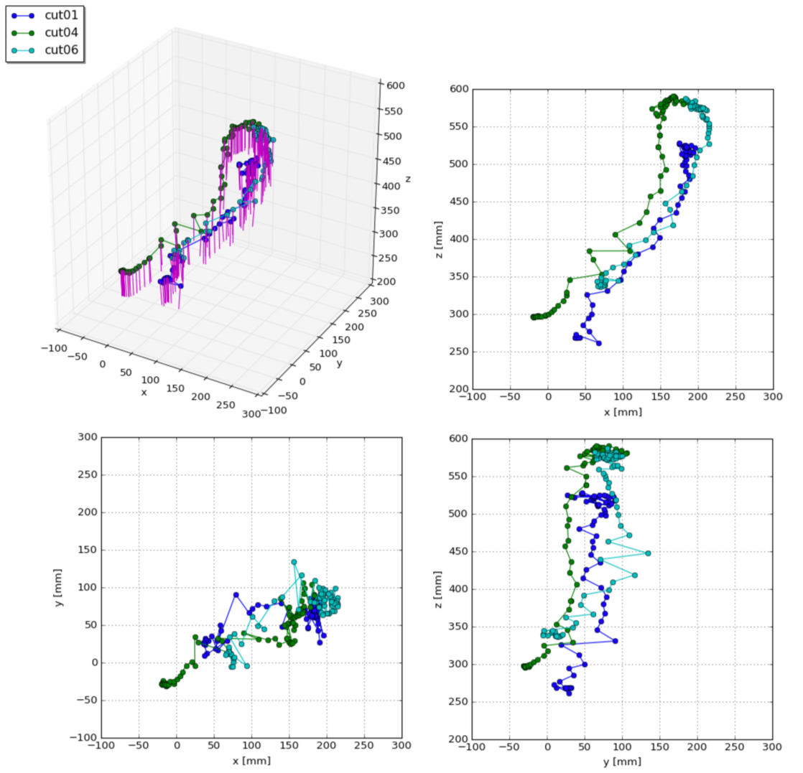

安井さんのブログ に公開されていた記事をこちらに転載、加筆修正しました。
(株)カラー 2号機さんの 投稿(下記参照) によると、 実写の手持ち風カメラワークを表現するため、モニター画面を監督自らiphoneで撮影していたようです。 この記事ではこのツイートにある庵野監督によるカメラの動きをアップされている動画から再現していきます。
カメラの位置姿勢推定については、カメラの内部パラメータとカメラの外部パラメータを求めることで可能です。 内部パラメータは、庵野監督がiPhoneを使用しているという情報から求めていきます。 別の投稿(下記参照) を参照すると、モニタ上の黒点は100mmごとに打たれた格子点とのことなので、この情報を使って外部パラメータを求めていきます。
まずは内部パラメータの推定。これはカメラの焦点距離や歪みなどの情報です。
パッと調べた限りiPhoneの型番ごとのカメラパラメータが公開されていないっぽい(されてたら教えて下さい)というのと、
swiftをいじればわかるっぽいんですがswift完全素人なので自分で推定するところからやることにします。
監督の使用されているiPhoneと同じものを用意できればいいんですが、あんまりiPhoneのバリエーションに詳しくないので、
ここは自分の持っているiPhoneと同じものを使っている、という仮定を置くことにして話を進めます
(「プロフェッショナル仕事の流儀」でも使用されている姿がよく映っていたので詳しい方、わかれば教えて下さい。
というか数値そのものご存知でしたら教えて下さい)。いきなり監督のiPhone=自分のiPhoneというクソデカ仮定を置きましたが、
まあスケールとか歪みとかがズレるくらいだろうということで気にせずいきます（いいのか？）。
定番アイテムのチェッカーボードを使って、内部パラメータ推定を行います。といっても、
Fig. 1のようなチェッカーボードの画像を何枚も撮って、OpenCVのcalibrateCamera関数に放り込むだけです。ここでの注意としては、
iPhoneは写真撮影と動画撮影とで画角が変わってしまうので、ちゃんと条件を合わせるために動画で撮影します。
今回は動画で撮影した後、適当にその中から画像形式で抜き出して先の関数の入力としました。

次には外部パラメータの推定。これは世界座標系における座標やベクトルをカメラ座標系での座標やベクトルに変換する回転と並進の情報です。 Fig. 2に位置関係を示しました。ここでまず最初に世界座標系を決めなければいけないんですが、先述のモニタ上に配置された黒点を使います。 画面横方向に$x_w$軸、縦方向に$y_w$軸、画面と垂直でカメラのある方向に$z_w$軸をとり、 ちょうど水面から顔を出したマリの頭と重なる黒点を原点$(0,0,0)$として定めます

カメラの画面内に世界座標上での位置が既知な点が4点以上あれば、カメラの位置姿勢を求めることができます (PnP問題)。 つまり、動画の各フレームで4点以上の黒点を検出し、それらがカメラ画像中でどの位置に写り込んでいるか、それらが世界座標系においてどの位置に配置された黒点か、 を求めていきます。これらが分かれば、OpenCVのsolvePnPRansac関数とRodrigues関数を使って、回転行列と並進ベクトルを求めることができます。 ここで求められた回転行列と並進ベクトルは世界座標系における座標やベクトルをカメラ座標系での座標やベクトルに変換するものなので、 今回のようにカメラの位置姿勢が欲しい場合には下の式のように、逆行列を用いた式変形を行った後、カメラ座標系における位置 $(x_c,y_c,z_c)=(0,0,0)$を代入することで位置が求まります。
カメラの姿勢については世界座標系におけるカメラの方向ベクトル$\boldsymbol{v_w}$を求めたいので、 下式にカメラ座標系における方向ベクトル$\boldsymbol{v_c} = (0,0,1)$を代入することで求めることができます。
さて、ここからはどのようにして動画の各フレームで黒点を検出するか。
そこまでフレーム数も多くはないので、チクチクと手作業でもいいんですができるだけ自動化してやっていきたいと思います。
単純に二値化して黒い部分だけ抽出してもトレス線なども引っかかってしまうためうまくいきません。特徴点マッチングなんかもあんまりうまくいきそうにないので、
今回は最初のフレームだけ各点の初期位置を登録して、それ以降のフレームでは前フレームの黒点位置の周囲のみを探索するようなトラッキングっぽい手法でやっていきます。
Fig. 3に示すように、現在のフレームでの黒点位置は前フレームの黒点位置の周辺に来るはずです。なのでこの周辺範囲内でなら、
黒点以外の余計なものが映り込む可能性がガクッと下がるので二値化処理でかんたんに黒点を見つけることができます。

ただ、このままだと最初のフレームに映っている黒点しか見つけられないので、この動画のように最初のフレームでは映っていなかった黒点が画面内に出て来るような場合に、 これらを検出できません。そこで、一旦求めた現在のフレームでの外部パラメータを使って見つけられている以外の黒点がカメラ画像平面でどの位置に来るかということを OpenCVのprojectPoints関数を使って再投影計算していきます。これによって、発見できていない黒点のカメラ画像中での位置が例えば$(-100,-100)$ のように画角以外の場所であれば無視してOKですが、画角内部に収まるような場合にはこの周囲も同様に探索し、初めて画面に現れたような黒点も検出します。 またこれによって、マリの頭と重なってしまっている間検出できていなかった黒点もその後復活して検出できるようになります。 以上の手順によってカメラの位置姿勢の軌跡を計算できます。と言いたいところですが，実際には検出を間違えたところの補正を手作業でやっておりそれなりに疲れました．モーションブラーが乗ると黒点の黒が薄まって二値化がうまくいかなかったり，黒点とトレス線が非常に近い場合にもうまくいきませんでした．とはいえすべて手作業と比べたら断然楽です．
と言いたいところですが、実際には検出を間違えたところの補正を手作業でやっておりそれなりに疲れました。 モーションブラーが乗ると黒点の黒が薄まって二値化がうまくいかなかったり、黒点とトレス線が非常に近い場合にもうまくいきませんでした。 とはいえすべて手作業と比べたら断然楽です。
Fig. 4に1カット分のカメラ軌跡を示します。
この動画中でマリは10回水面から浮上しますが、ここに示した結果は一番最初に浮上したカットにおけるカメラワークです。
青で示した折れ線がカメラの位置の遷移で、青点が各フレームでの位置です。赤線で示したのがカメラの向いている方向です。
画面横方向におよそ150mm、画面縦方向におよそ100mm、画面から離れる方向におよそ300mm移動していることがわかります。
カメラの方向はほとんどモニタ画面に対して垂直ですが、位置の遷移とともに微妙に変化していることがわかります。

Fig. 5に3カット分のカメラ軌跡を示します。
上で合計10カットあると述べましたが、2番目と3番目のカットでは最初のフレームでカメラがモニタ画面に近すぎるため映り込んでいる
黒点の数が十分でなく候補から外しました。また、5番目と7番目のカットではタイミングを図るためにカメラは動いていません。
故に、前から使えるカット3つ分ということで、1,4,6番目のカットを使っています(8,9,10番目については時間の関係上検討していません)。
3つを比較しても再現性高くほぼ同じ軌跡を描いていることがわかり興味深いです。

ということで最初に述べた、庵野監督によるカメラの動きを再現ができました。 もっといい方法があるぜ！とかのご意見や、実は内部ではこうやっていてですね...といった極秘情報などお待ちしております。 参考： http://labs.eecs.tottori-u.ac.jp/sd/Member/oyamada/OpenCV/html/py_tutorials/py_calib3d/py_calibration/py_calibration.html http://labs.eecs.tottori-u.ac.jp/sd/Member/oyamada/OpenCV/html/py_tutorials/py_calib3d/py_pose/py_pose.html